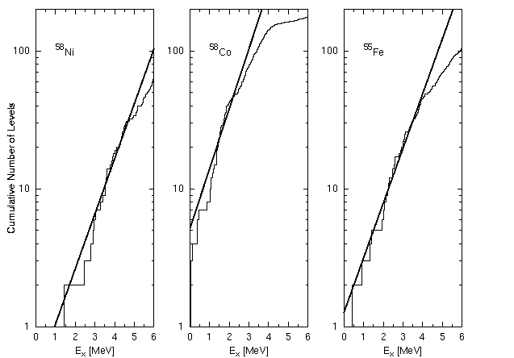

set term postscript eps enhanced
set output "staircase.eps"
set mxtics 2
set xtics 0,1
set xlabel "E_x [MeV]"
set xrange [ 0 : 6 ] noreverse nowriteback
set logscale y
set yrange [ 1 : 200 ] noreverse nowriteback
set ylabel "Cumulative Number of Levels" 1.0,0.0
set key right bottom
set linestyle 1 lt 1 lw 1
set linestyle 2 lt 1 lw 3
set lmargin 6
set rmargin 0
set multiplot
set origin 0.0,0.0
set size 0.30,1.0
set label 1 "^{58}Ni" at 1,100
plot exp((x-0.94611)/1.08812) notitle with lines linestyle 2,\
"staircase.dat" index 0:0 using 2:1 notitle with steps linestyle 1
set origin 0.3,0.0
set size 0.3,1.0
set ylabel ""
set label 1 "^{58}Co" at 1,100
plot exp((x+1.63555)/0.99813) notitle with lines linestyle 2,\
"staircase.dat" index 1:1 using 2:1 notitle with steps linestyle 1
set origin 0.6,0.0
set size 0.3,1.0
set label 1 "^{55}Fe" at 1,100
plot exp((x+0.25920)/1.09407) notitle with lines linestyle 2,\
"staircase.dat" index 2:2 using 2:1 notitle with steps linestyle 1
set nomultiplot
pause -1
